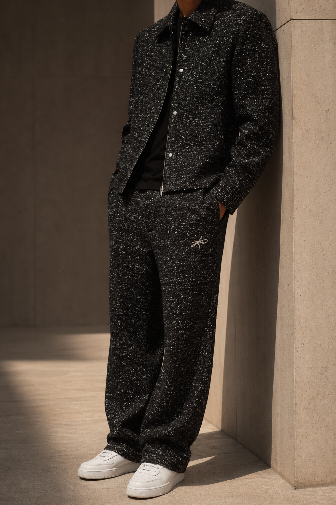
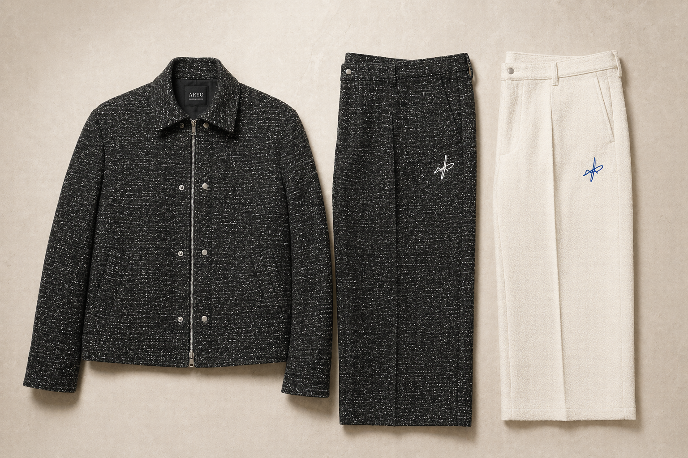
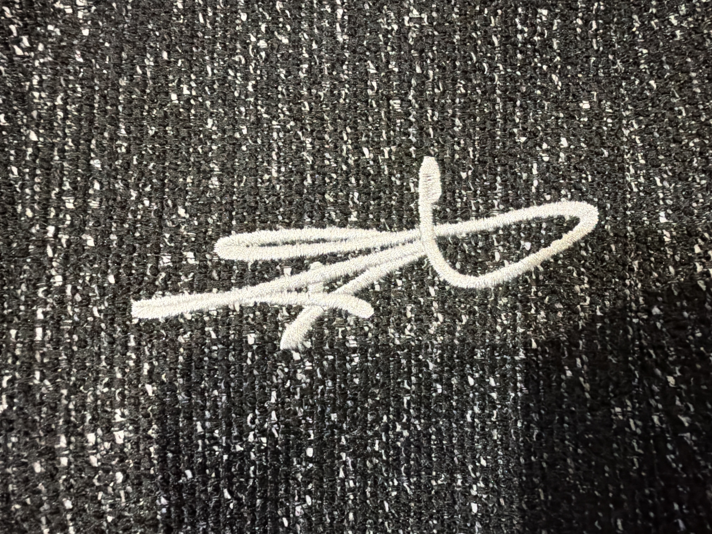
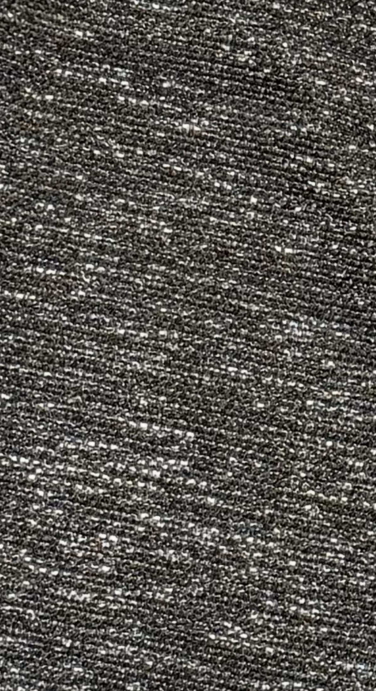
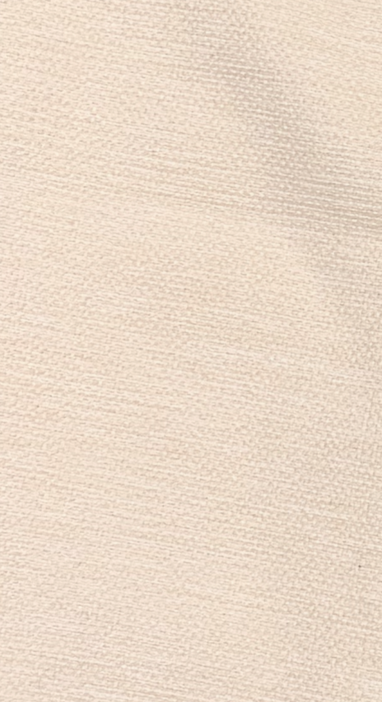

The Structure Jacket / Noir
A sharp, cropped outerwear shape with a pointed collar, silver zip beneath snap closure, black lining, and a textured surface that catches light in a restrained way.
Ivory outerwear edition forthcoming.
DROP 01 / MADE IN LONDON
Founded in London and shaped by restraint, ARYO opens with the noir jacket, the noir trouser, and the ivory trouser. The mood stays clean. The material does the work.

Fewer pieces. Cleaner lines. A quieter kind of luxury built from texture, hardware, and control.
DROP 01
The collection reads best as a tight first statement rather than a wide catalogue. Black carries the architecture. Ivory opens the light.

A sharp, cropped outerwear shape with a pointed collar, silver zip beneath snap closure, black lining, and a textured surface that catches light in a restrained way.
Ivory outerwear edition forthcoming.
Relaxed in line, grounded in the same speckled noir fabric, and finished with the white ARYO signature embroidery at the upper leg.
The softer counterpoint to the noir set, cut in the ivory texture with blue signature embroidery to keep the palette deliberate rather than busy.
DETAILS
Hardware, lining, fabric texture, and signature finishing are where Drop 01 starts to feel expensive. These are the real garment details the page is now built around.





COLOUR LANGUAGE
The palette should feel architectural rather than seasonal. Black carries the first impression. Ivory introduces relief. Blue appears only in the smallest stitched moment.
Noir
The lead expression of Drop 01 and the clearest statement of the jacket-and-trouser set.
Ivory
The quieter contrast piece that gives the drop air without losing the same disciplined silhouette.
PRIVATE ACCESS
Join the list for drop timing, first access, and launch updates without turning the page into a loud storefront.